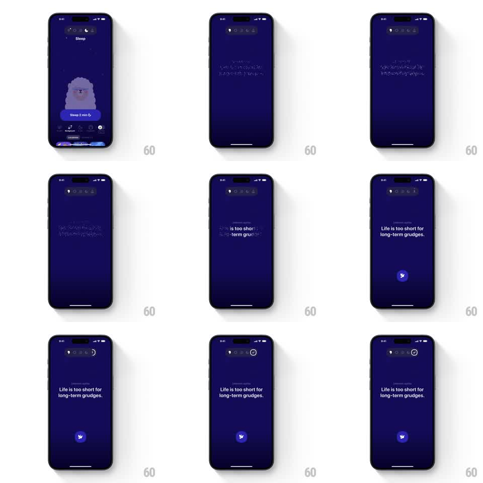

Media
Frame-by-frame

Rebuild this animation 1:1: Mindllama's sparkle text reveal - a drifting cloud of shimmering particles slowly coalesces until a quote snaps into crisp readable type.

Rebuild this animation 1:1: Mindllama's sparkle text reveal - a drifting cloud of shimmering particles slowly coalesces until a quote snaps into crisp readable type.
## Integration
Integration: stack-agnostic spec - springs given as stiffness/damping, timed motions as duration + curve; map every value to your framework and animation library of choice.
## Scene
Deep blue screen. Top: a small icon row (streak and utility icons). Center: a quote ("Life is too short for long-term grudges.") with a small author label above it. Bottom-center: a small circular llama-icon button. The quote begins as a loose cloud of glowing white-violet particles in the text's rough shape.
## Motion spec
Pattern: particle-cloud coalescence into text.
- The particle cloud drifts and shimmers in the text region (~1.5s): individual particles twinkle (opacity 0.3 to 1.0, randomized ~600ms cycles) and wander on small noise paths (+-12px).
- Particles converge toward their glyph positions over ~800ms (ease-out), twinkle frequency rising as they tighten.
- At landing, the particle field crossfades to the crisp type (200ms) with a final soft sparkle pass (a few particles flash and die along the letterforms).
- The author label fades in above once the text is crisp (200ms).
- The llama button stays still below throughout.
## Calibration
- The cloud should be barely legible at its tightest pre-snap state - the payoff is the moment chaos becomes words.
- Keep particle count high enough to suggest letterforms (hundreds), but the final text is real type, not particles.
## Reduced motion
The quote fades in over 400ms with no particle phase.
## Don't miss
- Shimmer continues subtly on the settled text for ~1s after landing, then stops - a quote that sparkles forever is unreadable.
- The effect is centered and self-contained; the icon row and button never participate.